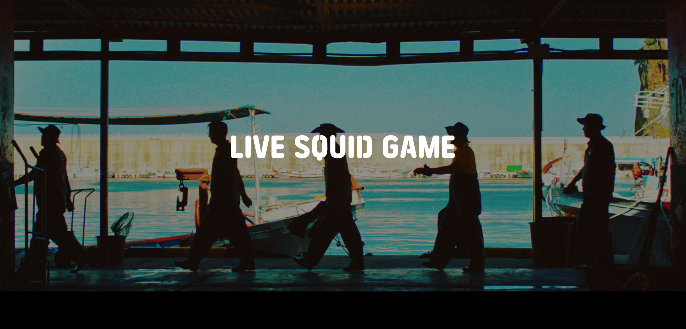
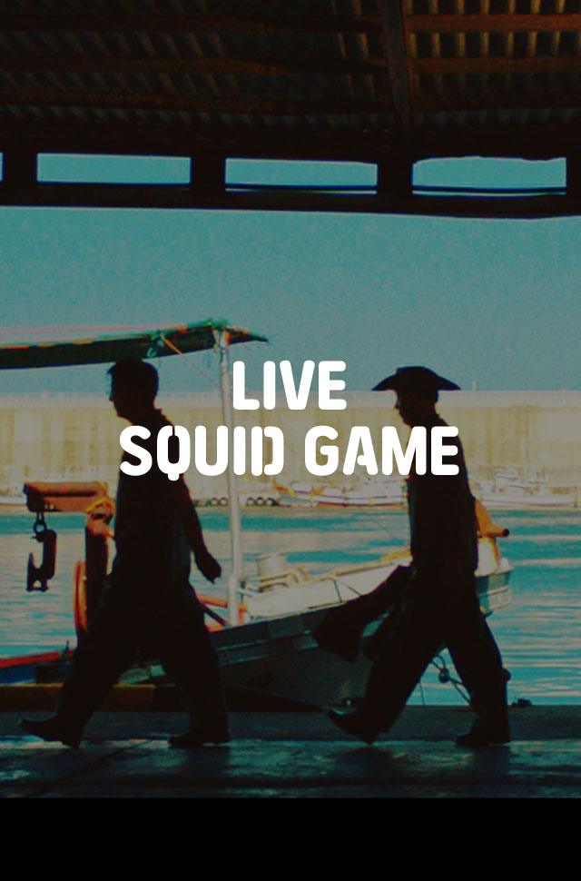

The squid fishermen's day begins
once again
with the high waves of
the ocean in Ulleungdo.
Overnight work may be exhausting,
but they have a great time
showing fantastic teamwork.
Ramyeon is a must-have menu
on the boat!
Dive into the charm of Ulleungdo!